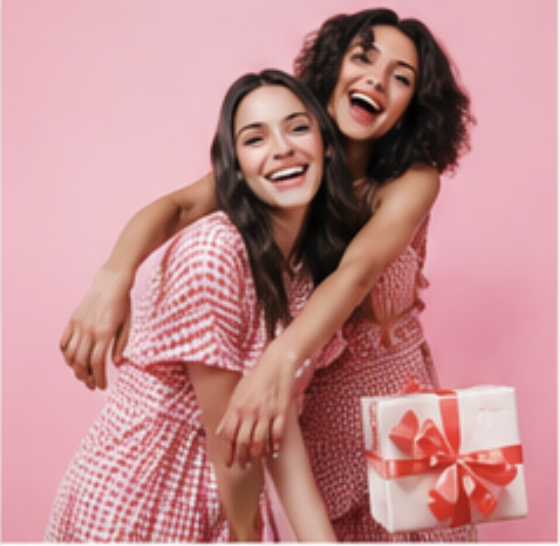
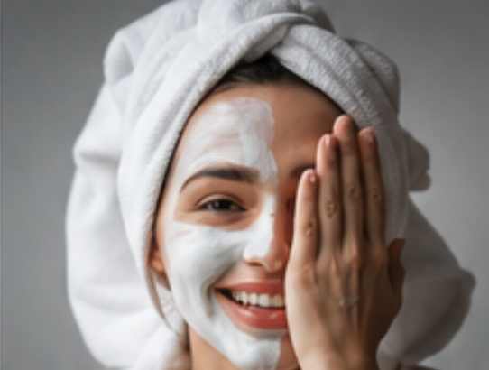
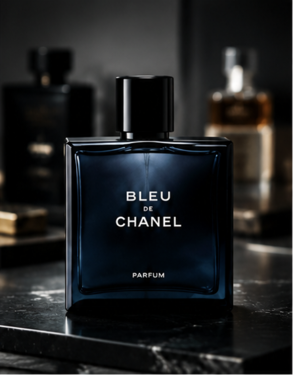
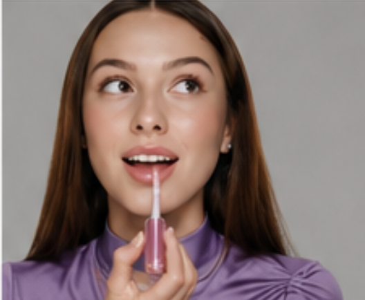
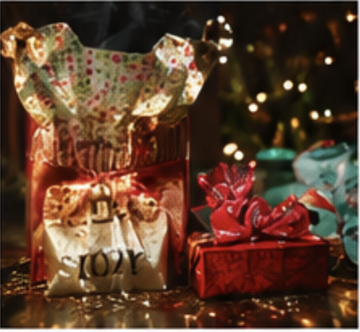
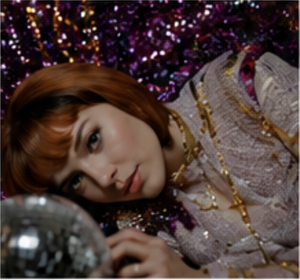
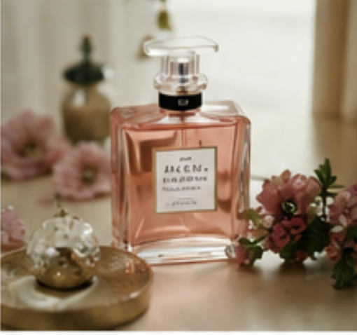
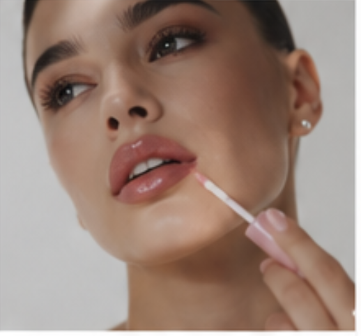

Ideas para regalar a tu mejor amiga
quien dijo que hay que esperar a una fecha especial para mimar a esa persona que te conoce hasta los filtros de instagram? tu mejor amiga, esa aliada incondicional, psicologo 24/7 y complice de aventuras merece un detalle que le recuerde lo importante que es para ti. Te traemos ideas beauty para regalarle a la que siempre esta a tu lado, porque la amistad se celebra todos los dias.

Detox para tu piel
Tras largas horas de fiesta, brindis, exposicion al humo y rutinas de sueño alteradas, la piel luce cansada y deshidratada. Devuelvele la vitalidad y el brillo con un plan detox que incluya limpieza profunda, exfoliacion, hidratacion y nutricion. Te contamos como recuperar la piel y lucir radiante en pocos dias.

10 fragancias masculinas que marcan tendencia para regalar a papá
Cuando se trata de sorprender a papá en su día especial, ya sabes exactamente cómo lograrlo. Un buen perfume será siempre el regalo ideal. Cada vez surgen nuevas propuestas y más de una se adapta a su estilo y personalidad. Aquí algunas de las más novedosas.
Tendencias beauty 2026
Este nuevo año la belleza se expresa con mas personalidad que nunca. El maquillaje deja atras lo discreto para abrazar colores vibrantes, acabados sofisticados y miradas que hablan por si solas. Mientras el skincare evoluciona hacia formulas con propósito: menos promesas vacias y más activos que realmente transforman la piel. Repasamos el beauty mood de 2026 autentico, sensorial y audaz.

9 productos que amamos esta temporada
Comparte con nosotros la pasión por descubrir nuevos productos que iluminaran y renovaran tus rutinas beauty.

El regalo perfecto de Navidad sí existe (y está en Magie)
Nos pasamos de compras en busca del regalo perfecto para cada ser con intención y aroma.

Cómo sobrevivir la temporada de fiestas sin perder el brillo
Sabemos lo intenso que puede ser diciembre: de fiesta en fiesta, la piel del rostro de aqueja para sostener la temporada.

Los perfumes gourmand: dulces, envolventes y emocionantemente irresistibles
CDulces, envolventes y emocionantemente irresistibles: los perfumes gourmand han conquistado el corazón de millones.

El regreso del brillo: el lip gloss recobra su corona
El brillo volvió para quedarse. El lip gloss se reinventa con tratamientos que transforman los labios en segundos.